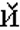
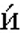

我记得曾有一个时候，我们很少能够从本国的刊物上，知道一点苏联的情形。虽是文艺罢，有些可敬的作家和学者们，也如千金小姐的遇到柏油一样，不但决不沾手，离得还远呢，却已经皱起了鼻子。近一两年可不同了，自然间或还看见几幅从外国刊物上取来的讽刺画，但更多的是真心的绍介着建设的成绩，令人抬起头来，看见飞机，水闸，工人住宅，集体农场，不再专门两眼看地，惦记着破皮鞋摇头叹气了。这些绍介者，都并非有所谓可怕的政治倾向的人，但决不幸灾乐祸，因此看得邻人的平和的繁荣，也就非常高兴，并且将这高兴来分给中国人。我以为为中国和苏联两国起见，这现象是极好的，一面是真相为我们所知道，得到了解，一面是不再误解，而且证明了我们中国，确有许多“威武不能屈，贫贱不能移”[34]的必说真话的人们。
但那些绍介，都是文章或照相，今年的版画展览会，却将艺术直接陈列在我们眼前了。作者之中，很有几个是由于作品的复制，姓名已为我们所熟识的，但现在才看到手制的原作，使我们更加觉得亲密。
版画之中，木刻是中国早已发明的，但中途衰退，五年前从新兴起的[35]是取法于欧洲，与古代木刻并无关系。不久，就遭压迫，又缺师资，所以至今不见有特别的进步。我们在这会里才得了极好，极多的模范。首先应该注意的是内战时期，就改革木刻，从此不断的前进的巨匠法复尔斯基（V.Favorsky）[36]，和他的一派兑内加（A.Deineka）[37]，冈察洛夫（A.Goncharov）[38]，叶卡斯托夫（G.Echeistov）[39]，毕珂夫（M.Pikov）等，他们在作品里各各表现着真挚的精神，继起者怎样照着导师所指示的道路，却用不同的方法，使我们知道只要内容相同，方法不妨各异，而依傍和模仿，决不能产生真艺术。
兑内加和叶卡斯托夫的作品，是中国未曾绍介过的，可惜这里也很少；和法复尔斯基接近的保夫理诺夫（P.Pavlinov）的木刻，我们只见过一幅，现在却弥补了这缺憾了。
克拉甫兼珂（A.Kravchenko）[40]的木刻能够幸而寄到中国，翻印绍介了的也只有一幅，到现在大家才看见他更多的原作。他的浪漫的色彩，会鼓动我们的青年的热情，而注意于背景和细致的表现，也将使观者得到裨益。我们的绘画，从宋以来就盛行“写意”，两点是眼，不知是长是圆，一画是鸟，不知是鹰是燕，竞尚高简，变成空虚，这弊病还常见于现在的青年木刻家的作品里，克拉甫兼珂的新作《尼泊尔建造》（Dneprostroy），是惊起这种懒惰的空想的警钟。至于毕斯凯莱夫（N.Piskarev），则恐怕是最先绍介到中国来的木刻家。他的四幅《铁流》[41]的插画，早为许多青年读者所欣赏，现在才又见了《安娜·加里尼娜》[42]的插画，——他的刻法的别一端。
这里又有密德罗辛（D.Mitrokhin），希仁斯基（L.Khizhinsky），莫察罗夫（S.Mochalov）[43]，都曾为中国豫先所知道，以及许多第一次看见的艺术家，是从十月革命前已经有名，以至生于二十世纪初的青年艺术家的作品，都在向我们说明通力合作，进向平和的建设的道路。别的作者和作品，展览会的说明书上各有简要说明，而且临末还揭出了全体的要点：“一般的社会主义的内容和对于现实主义的根本的努力”，在这里也无须我赘说了。
但我们还有应当注意的，是其中有乌克兰，乔其亚[44]，白俄罗斯的艺术家的作品，我想，倘没有十月革命，这些作品是不但不能和我们见面，也未必会得出现的。
现在，二百余幅的作品，是已经灿烂的一同出现于上海了。单就版画而论，使我们看起来，它不像法国木刻的多为纤美，也不像德国木刻的多为豪放；然而它真挚，却非固执，美丽，却非淫艳，愉快，却非狂欢，有力，却非粗暴；但又不是静止的，它令人觉得一种震动——这震动，恰如用坚实的步法，一步一步，踏着坚实的广大的黑土进向建设的路的大队友军的足音。
附记：会中的版画，计有五种。一木刻，一胶刻（目录译作“油布刻”，颇怪），看名目自明。两种是用强水浸蚀铜版和石版而成的，译作“铜刻”和“石刻”固可，或如目录，译作“蚀刻”和“石印”亦无不可。还有一种Monotype，是在版上作画，再用纸印，所以虽是版画，却只一幅的东西，我想只好译作“独幅版画”。会中的说明书上译作“摩诺”，还不过等于不译，有时译为“单型学”，却未免比不译更难懂了。其实，那不提撰人的说明，是非常简而得要的，可惜译得很费解，如果有人改译一遍，即使在闭会之后，对于留心版画的人也还是很有用处的。
二月十七日。
注 释
[33] 本篇最初发表于1936年2月24日上海《申报》。
苏联版画展览会，由当时的苏联对外文化协会、中苏文化协会和中国文艺社联合主办，1936年2月20日起在上海举行，为期一周。
[34] “威武不能屈，贫贱不能移” 语出《孟子·滕文公（下）》：“富贵不能淫，贫贱不能移，威武不能屈，此之谓大丈夫。”
[35] 关于中国现代木刻的兴起，参看《且介亭杂文·〈木刻纪程〉小引》。
[36] 法复尔斯基（В·Фаворски

，1886—1964） 苏联木刻家。参看《集外集拾遗·〈引玉集〉后记》。[37] 兑内加（А.А.Де

нека，1899—？） 现译捷依涅卡，苏联水彩画、版画及雕刻家。[38] 冈察洛夫（А.Гончаров，1903—？） 苏联书籍插画艺术家。
[39] 叶卡斯托夫（Г.Ечестов） 现译叶契依斯托夫，生平不详。
[40] 克拉甫兼珂（А.И.Кравченко，1889—1940） 苏联木刻家。
[41] 《铁流》 苏联作家绥拉菲摩维支（1863—1949）著的长篇小说。毕斯凯莱夫（1892—1959）为《铁流》所作的四幅插图，曾经鲁迅推荐发表于1933年7月《文学》月刊创刊号。
[42] 《安娜·加里尼娜》 通译《安娜·卡列尼娜》，俄国作家列夫·托尔斯泰（1828—1910）著的长篇小说。
[43] 密德罗辛、希仁斯基、莫察罗夫 都是苏联木刻家。参看《集外集拾遗·〈引玉集〉后记》。
[44] 乔其亚 现译为格鲁吉亚。